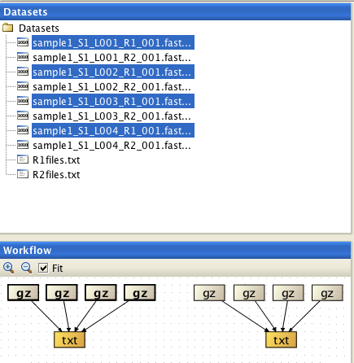

Makes a list of file names of the selected files.
Some Chipster tools (e.g. Tophat2 and Cuffdiff2) require a list of file names to assign input files to correct inputs. This tool will produce a suitable list file for those tools.
By default the list is sorted in alphabetical order. This is done so that if you have e.g. two lists for matching read pairs, the read pairs are listed in identical order in both lists. If your files are named so that the sorted order is not correct, you can carefully select the files one by one in the correct order and set Sort: no.
Note: Use ctrl or cmd key to select multiple files.

An example of how to create the list files for Tophat: first select all read 1 FASTQ files (named here "_R1") and run the
Make a list of file names tool. Repeat for the read 2 files (named "_R2"). Alphabetical sorting is ok here, as
the file names are identical except for the lane number ("_L001") and read ("_R1"),
so they get ordered the same way in both list files.
You need both of these list files and
all the original FASTQ files as inputs for Tophat.
The output is a text file.